فیلتر هیدروفوبیک
جلوگیری از سرریز مایعات و حفاظت از پمپ و سیستم ساکشن مرکزی.
تولید شرکت دانشبنیان مخازن طبی آبادیس برای کنترل عفونت و ایمنی جریان کار در مراکز درمانی
کیسههای ساکشن آبادیس در حجمهای یک، دو و سه لیتری تولید میشوند و دارای سه نوع فیلتراسیون هیدروفوبیک، دوئال و مکانیکی هستند.
ویژگیهای مشترک: پودر ژلکننده، جلوگیری از سرریز مایعات، سازگاری با کلیه دستگاههای ساکشن، سیستم حفاظت از ساکشن مرکزی.
قابل نصب بهصورت تکی و سری روی پایه ثابت (دیواری) و پرتابل — نصب و خدمات پس از فروش رایگان.
جلوگیری از سرریز مایعات و حفاظت از پمپ و سیستم ساکشن مرکزی.
تبدیل مایع به ژل برای حمل ایمنتر و کاهش ریسک نشت.
سازگار با کلیه دستگاههای ساکشن پرتابل و سانترال.
چرا آبادیس؟
کاهش هزینههای مربوط به مواد شستوشو، مصرف آب، برق و منابع انسانی
باعث جمعآوری بهتر زبالههای مایع و عفونی میگردد.
باعث کاهش حجم زبالههای بیمارستانی و حفظ محیطزیست میگردد.
حذف فعالیتهای مربوط به شستوشوی مخازن و استفاده راحت برای جمعآوری ضایعات حین عمل
کارخانه دانشبنیان تجهیزات پزشکی آبادیس در سال ۱۳۹۷ با بهرهگیری از پیشرفتهترین تجهیزات و ماشینآلات و با همکاری نیروهای متخصص راهاندازی شد. این کارخانه با ظرفیت تولید سالانه ۵ میلیون کیسه ساکشن یکبارمصرف، بهعنوان بزرگترین تولیدکننده این محصولات در منطقه خاورمیانه شناخته میشود.
| مدلها | ۱ لیتریقابل سفارش (کدهای ۰۴۰۱۱۱۱، ۰۴۰۱۰۱۱)، ۲ لیتریقابل سفارش (۴ مدل)، ۳ لیتریقابل سفارش (۷ مدل) — جدول کامل کد محصول و IRC در هر بخش |
|---|---|
| ظرفیت | ۱، ۲ و ۳ لیتر |
| ابعاد کیسه | قطر ۱۱ سانتیمتر؛ ارتفاع: ۱ لیتری ۱۵٫۵، ۲ لیتری ۲۴٫۵ و ۳ لیتری ۳۹ سانتیمتر (طبق نقشهٔ ابعاد محصول) |
| ابعاد کارتن | ۱ و ۲ لیتری: ۵۷.۵ × ۴۲.۵ × ۴۴ cm · ۳ لیتری: ۴۹ × ۴۹ × ۴۹ cm · معمولاً ۴۵ عدد در کارتن (فیلتر مکانیکی: ۳۰ عدد) |
| سازگاری | سازگار با کلیه دستگاههای ساکشن پرتابل و سانترال؛ نصب تکی و سری روی پایه ثابت (دیواری) و پرتابل |
| فیلتراسیون | هیدروفوبیک، دوئال و مکانیکی؛ با یا بدون پودر ژلکننده |
| لوازم جانبی | فیلترها، پایه و نگهدارنده، اتصالات، مخزن |
| گواهیها | IMED، ISO، CE |
| کاتالوگ و راهنما | کاتالوگ فارسی (PDF)، Catalogue (EN, PDF)، راهنمای استفاده کاربر نهایی |
حجم ساکشن: یک لیتر
انواع فیلترهای کیسههای نهایی: فیلترهای استفادهشده در کیسههای آبادیس در ۳ نوع تولید میشود که موجب جلوگیری از سرریز مایعات میگردد: فیلترها
برای مشاهده نحوه استفاده از کیسه ساکشن ها به این صفحه مراجعه نمایید.
| کد محصول | IRC | سایز | نوع فیلتر | پودر | رنگ درب |
|---|---|---|---|---|---|
| ۰۴۰۱۱۱۱ | 6952056777153306 | یک لیتری | هیدروفوبیک | ✓ | |
| ۰۴۰۱۰۱۱ | 7817505042353929 | یک لیتری | هیدروفوبیک | × |
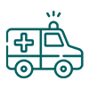
آمبولانس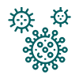
عفونی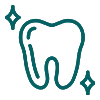
دندانپزشکیکیسه ساکشن ۲ لیتری
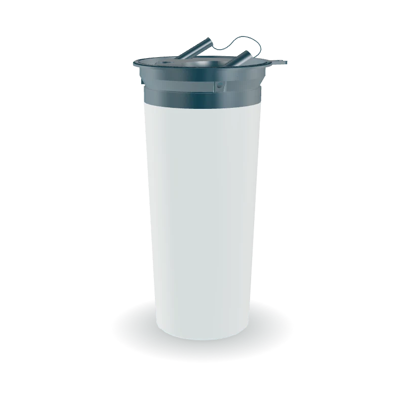
| کد محصول | IRC | سایز | نوع فیلتر | پودر | رنگ درب |
|---|---|---|---|---|---|
| ۰۴۰۱۱۱۲ | 9647935197253589 | دو لیتری | هیدروفوبیک | ✓ | |
| ۰۴۰۱۱۰۲ | 5826314295044204 | دو لیتری | × | ✓ | 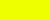 |
| ۰۴۰۱۰۱۲ | 4383099410749165 | دو لیتری | هیدروفوبیک | × | |
| ۰۴۰۱۱۳۲ | 4111380328256244 | دو لیتری | مکانیکی | ✓ |
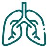
ریه و آندوسکوپی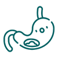
گوارش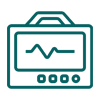
CCU / ICU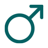
بخش مردان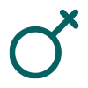
بخش زنان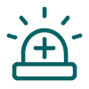
اورژانس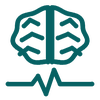
ECTحجم ساکشن: ۳ لیتر در حالت تکی، تا ۱۲ لیتر در حالت سری یک ردیفه بر روی پایه
مشخصات: دارای پودر ژلکننده، فیلتر هیدروفوبیک(جلوگیری از سر ریز مایعات)، سازگار با کلیه دستگاههای ساکشن، دارای سیستم حفاظت از ساکشن مرکزی
انواع فیلترهای کیسههای نهایی: فیلترهای استفادهشده در کیسههای آبادیس در ۳ نوع تولید میشود که موجب جلوگیری از سرریز مایعات میگردد: فیلترها
برای مشاهده نحوه استفاده از کیسه ساکشن ها به این صفحه مراجعه نمایید.
کیسه ساکشن استریل آبادیس مناسب برای عملهای لیپوساکشن و سایر عملهای جراحی حساس است.
مزایا:
| کد محصول | IRC | سایز | نوع فیلتر | پودر | استریل | رنگ درب |
|---|---|---|---|---|---|---|
| ۰۴۰۱۱۱۳ | 6579214989949869 | سه لیتری | هیدروفوبیک | ✓ | × | |
| ۰۴۰۱۱۰۳ | 3226257467113524 | سه لیتری | × | ✓ | × | |
| ۰۴۰۱۰۱۳ | 7600653363719319 | سه لیتری | هیدروفوبیک | × | × | |
| ۰۴۰۱۱۲۳ | 3011241869977602 | سه لیتری | Dual | ✓ | × | |
| ۰۴۰۱۱۳۳ | 2707894365287680 | سه لیتری | مکانیکی | ✓ | × | |
| ۰۴۰۱۲۱۳ | 9787915172873298 | سه لیتری | هیدروفوبیک | ✓ | × | |
| ۰۴۰۱۱۱۳-۲ | _ | سه لیتری | هیدروفوبیک | ✓ | ✓ |
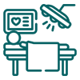
اتاق عمل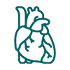
قلب و عروقدر هر کارتن کیسههای ساکشن یکبار مصرف برای هر سه سایز معمولاً ۴۵ عدد است (فیلتر مکانیکی: ۳۰ عدد در کارتن)
برای لیست قیمت، نمونه و هماهنگی نصب با تیم فروش مخازن طبی آبادیس در تماس باشید.